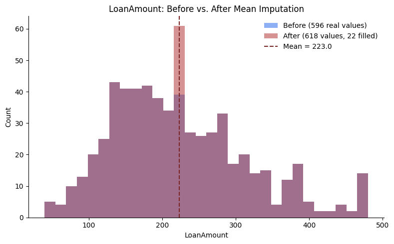
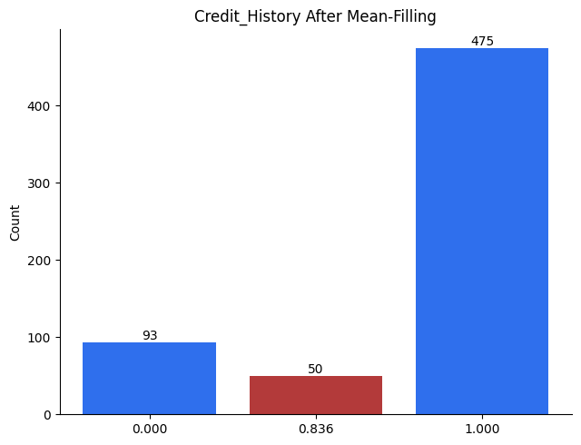
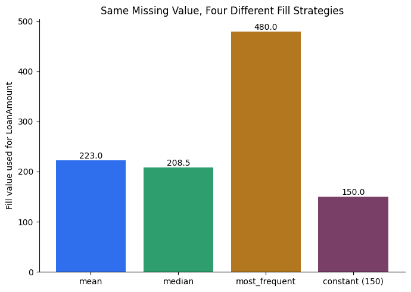

Sunita had 614 loan applications and 50 blanks in the income column. Her first instinct: delete those rows. Simple and honest.
But the blanks were not random. Self-employed applicants were the ones leaving income empty — so deleting them deleted almost every self-employed person from the data.
The model that came out was excellent at judging salaried applicants and blind to everyone else. The bias came from the cleaning step, not the algorithm.
So the real question is why is it missing? Missing at random can be filled with a mean or median. Missing for a reason must be kept, flagged, and modelled.
🔑 The one idea
Deleting rows loses information; filling them invents it. The skill is choosing which cost to pay.
The "delete it" branch of Handling Missing Data (sub-skill #1 in
04_Data_Cleaning.MD) — the alternative to imputation. Two methods,
applied in this order, not interchangeably.
Every code block below is walked line by line, syntax piece by syntax
piece, with the real value it produces when actually run against this
repo's loans.csv — not a guess, every number here was executed and
checked before being written down.
The Two Methods, In Order
flow diagram (rendered in the notebook)
flowchart TD
A["Missing values found<br/>dataset.isnull().sum()"] --> B{"Is this COLUMN<br/>≥ 50% missing?"}
B -->|"Yes"| C["Method 1 - Drop the column<br/>too little real signal to impute"]
B -->|"No"| D{"Is this ROW<br/>missing a value?"}
D -->|"Yes, few rows affected"| E["Method 2 - Drop the row"]
D -->|"No"| F["Keep it, impute later"]
style C fill:#b33a3a,stroke:#7a2626,color:#fff
style E fill:#b33a3a,stroke:#7a2626,color:#fff
style F fill:#2f9e6f,stroke:#1e6b4b,color:#fff
Why column-first: a single mostly-empty column can make many rows
look incomplete even though the rows themselves are fine. Removing that
one bad column first can rescue a lot of rows that a blind row-level pass
would otherwise throw away (proven with real numbers in the last section).
Method 1: Drop the Column (≥ 50% missing)
If more than half a column is missing, imputing it means inventing more
values than you actually observed — past that point, dropping the column
is more honest than filling it.
Line 2, piece by piece — cols_to_drop = missing_pct[missing_pct >= 50].index
Syntax piece
What it does
What it actually is here
missing_pct >= 50
Compares every value in the Series to 50, producing a same-shaped Series of True/False
False for all 13 columns — even Credit_History at 8.09 is nowhere close to 50
missing_pct[ ... ]
Boolean indexing: put a True/False Series in brackets and pandas keeps only the entries where it's True
an empty Series — nothing scored True
.index
Pulls out just the labels (column names) from whatever's left, discarding the numeric values
Index([], dtype='str') — an empty list of column names
So cols_to_drop is an empty list. That's not a mistake in the code — it's
the correct, honest answer: no column in loans.csv is anywhere near
50% missing.
Line 3, piece by piece — dataset_cleaned = dataset.drop(columns=cols_to_drop)
Syntax piece
What it does
What it actually is here
.drop(columns=cols_to_drop)
Removes every column named in the list
the list is empty, so nothing is removed
Final result:dataset_cleaned.shape → (618, 13) — identical to
dataset. The code is correct and the outcome is "do nothing," which is
the point: this method should only act when there's actually something to
act on.
The two "idiomatic one-liner" alternatives
Same outcome, written the way you'll actually see it in other people's
code:
For a DataFrame, len() returns the row count — same number as .shape[0]
618
0.5 * len(dataset)
Half the rows
309.0
int(...)
thresh must be a whole number, not 309.0
309
axis=1
Tells dropna to evaluate and drop columns as the unit (not rows) — this is a different meaning of axis=1 than the fill-direction one in 07_Filling_Missing_Values.MD, see the callout below
—
thresh=309
Keep a column only if it has at least 309 non-null values out of 618
—
Real result: (618, 13) — every column's worst case (Credit_History)
still has 618 - 50 = 568 non-null values, comfortably over 309.
dataset.loc[:, dataset.isnull().mean() < 0.5]:
Syntax piece
What it does
Value here
dataset.isnull().mean()
Same idea as .sum() / dataset.shape[0] from Line 1, done in one call — mean of True/Falseis the proportion of True
Gender: 0.0210, ..., Credit_History: 0.0809
... < 0.5
Boolean Series, one entry per column
True for all 13 columns
dataset.loc[row_selector, column_selector]
.loc takes two selectors separated by a comma
—
: (the row selector)
"every row, no filtering"
all 618 rows
the boolean Series (the column selector)
keep only columns where it's True
all 13 columns
Real result: (618, 13) — same answer as every version above, because
they're three different sentences for the exact same idea.
Caveat worth knowing: a column can be both high-missing and highly
predictive — Credit_History is the textbook example for this dataset. In
that case, dropping it outright throws away real signal. The more careful
move is often a missing-indicator flag (a new Credit_History_was_missing
column of 0/1) kept alongside an imputed value, rather than deleting the
column — the fact that it was missing can itself be informative.
Method 2: Drop the Row
For scattered, low-volume missingness once the worst columns are gone —
remove the affected rows instead.
618 - 457 = 161 rows removed — over a quarter of the dataset, from
columns that individually looked almost fine (worst was 8.09%). Full
explanation of why, with the exact mechanism, in the next section.
dataset.dropna(subset=["Loan_Status"])
Syntax piece
What it does
subset=["Loan_Status"]
Instead of checking all 13 columns, only check the column(s) named here — ignore missingness everywhere else
Real result: Loan_Status has 0 missing values in loans.csv, so
dataset.dropna(subset=["Loan_Status"]).shape → (618, 13) — 0 rows
dropped.subset= is what makes dropna selective instead of
all-or-nothing.
dataset.dropna(thresh=12)
Syntax piece
What it does
thresh=12
Keep a row only if it has at least 12 non-null values out of 13 — i.e., drop it only if 2 or more columns are missing
To see exactly why this drops what it drops, here's how many non-null
values each row actually has, counted directly from loans.csv
(dataset.notnull().sum(axis=1)):
Non-null values in the row
Missing in that row
# of such rows
10
3
1
11
2
16
12
1
144
13 (complete)
0
457
thresh=12 keeps rows with 12 or 13 non-null values (144 + 457 = 601) and drops the rest (1 + 16 = 17):
>>> dataset.dropna(thresh=12).shape
(601, 13)
618 - 601 = 17 rows dropped, matching the table exactly. (If you instead
ran thresh=10, notice from the table that
every row already has at least 10 non-null values, so it would drop
0 rows — a threshold only starts removing rows once it's set higher
than the worst row actually present.)
dropna(subset=...) is usually the safer default in practice — it only
drops rows over missingness in columns you've decided actually matter,
instead of penalizing a row for a gap in some unrelated, low-priority
column.
The Real Numbers, From loans.csv
Every column here is well under the 50% line — Method 1 removes nothing
(exactly what 05_Data_Cleaning_Practice.ipynb Section 7 found). Now the
surprise: plain dataset.dropna() still removes 161 rows (26.05%).
Here's the exact mechanism, traced line by line.
dataset.isnull().any(axis=1).sum()
Syntax piece
What it does
Value here
dataset.isnull()
The same True/False grid from Method 1
618×13 booleans
.any(axis=1)
For each row, collapse across its 13 columns: True if at least one is True
a Series of 618 booleans, one per row
.sum()
Count how many rows came back True
161
First 10 rows of that intermediate .any(axis=1) Series, so "one per row"
isn't just an abstract claim:
0 False
1 False
2 False
3 False
4 False
5 True <- this row is missing at least one value
6 False
7 True
8 False
9 False
Why 161 rows, when no single column is worse than 8.09%: with 13
largely independent columns, the chance a given row is missing in at
least one of them compounds well past any single column's individual
rate — it's a union across 13 events, not any one event's probability.
This is exactly why blind, whole-dataset dropna() is risky, and why
dropna(subset=...) — targeted at the columns you actually care about —
is usually the better default once Method 1 is done.
A Note on axis — the Same Word, Three Different Meanings
axis=1 has now shown up three times across this file and
07_Filling_Missing_Values.MD, meaning something slightly different
each time — this is the single most common source of confusion in pandas
code, worth collecting in one place:
Call
axis=1 means...
df.fillna(method="ffill", axis=1) (see 07_Filling_Missing_Values.MD)
Fill direction: across a row, left to right
df.dropna(axis=1)
What's being evaluated-and-dropped: columns, not rows
df.isnull().any(axis=1) / .sum(axis=1)
Direction of the reduction: collapse across each row's columns, producing one result per row
Rule of thumb:axis=0 ("down the rows," per column) is the default
almost everywhere and almost always what you want for tabular data.
axis=1 ("across the columns," per row) is the deliberate exception — and
because it means something slightly different per method, the safest habit
is to test it on a small example rather than assume, the same way every
value in this file was verified against loans.csv before being written
down.
When to Use Which
Signal
Action
One column, mostly empty (≥ 50%)
Method 1 — drop the column
A handful of rows, missing in many columns at once ("bad records")
Method 2 — drop those rows
Many rows, each missing just one value, in different columns
Don't blindly drop rows — impute instead
A column that's high-missing but highly predictive
Missing-indicator flag instead of a straight drop
Where This Fits
04_Data_Cleaning.MD — this is the "delete" half of sub-skill #1
(Handling Missing Data); 07_Filling_Missing_Values.MD is the other half.
05_Data_Cleaning_Practice.ipynb Section 7 already implements Method 1
(flag_high_missing_columns) against the real loans.csv data — every
number in this file was computed the same way, straight from that
dataset.
FAQ — Common Mix-Ups
"Why 50% specifically?" No universal law — it's a common default
because past the halfway point you're imputing more values than you
actually observed. Some teams use 30–40% for less critical columns, or
keep a column at any missingness level if it's important enough to
justify a missing-indicator flag instead of deletion.
"Dropping rows is always safer than dropping columns, since I lose
less information overall." Not necessarily — see the loans.csv
example above: 26% of rows gone from columns that individually looked
fine. Column-first, then targeted row deletion, is the safer order.
"dropna() and dropna(subset=...) do basically the same thing."
No — plain dropna() penalizes a row for any missing column, even
ones you don't care about for this analysis; subset= limits the check
to columns that actually matter, which is almost always what you want.
"axis=1 means the same thing everywhere in pandas." No — see the
dedicated callout above. Always check which operation you're calling
before assuming what axis=1 does to it.
Interview-Style Q&A
Q: Why check for high-missing columns before checking rows?
A: A single mostly-empty column can make many otherwise-complete rows look
incomplete. Removing that column first can save a large number of rows
that a blind row-level pass would have discarded.
Q: In the loans.csv example, why does dropna() remove 26% of rows
when no single column is more than ~8% missing?
A: dropna() drops a row if any of its columns is missing. With 13
largely independent columns, the probability that a row hits a gap
somewhere compounds well past any single column's individual rate —
the union across columns is bigger than any one column's share.
Q: When would you use dropna(subset=[...]) instead of plain
dropna()?
A: When you only care about missingness in specific columns — e.g. the
target column, or a handful of must-have features — and don't want
unrelated gaps in low-priority columns to cost you rows unnecessarily.
Q: What does thresh=12 actually do in dropna(thresh=12)?
A: Keeps a row only if it has at least 12 non-null values (out of however
many columns exist) — equivalently, drops a row once 2 or more of its
values are missing. It's a tolerance level, not a specific column check.
The other branch of Handling Missing Data (sub-skill #1 in
04_Data_Cleaning.MD) — 06_Dropping_Missing_Values.MD was about
removing the gap; this file is about what goes in it, and how to pick
that correctly instead of guessing.
.info() — the other way to see what's missing
Your screenshot's dataset.info() tells the same story as
isnull().sum() from 05_Data_Cleaning_Practice.ipynb, just shaped
differently — Non-Null Count instead of missing count, sitting right
next to Dtype:
That Dtype column is the whole point of running .info() before you fill
anything — it's exactly what tells you whether a column needs a number
(mean/median) or a category (mode).
The Decision: Type and Pattern, Not Just Type
Two separate questions decide the right fill method, not one:
What TYPE is this column? — numerical or categorical
(03_Types_Of_Variables.MD)
What PATTERN does this dataset have? — are rows independent,
unrelated records, or a real sequence where order carries meaning?
flow diagram (rendered in the notebook)
flowchart TD
A["Column has missing values"] --> B{"Do rows have a<br/>real order?<br/>time series, sorted log"}
B -->|"Yes"| C["Method B - Forward/Backward Fill<br/>ffill / bfill"]
B -->|"No - independent rows<br/>e.g. loans.csv"| D{"Numerical or<br/>Categorical?"}
D -->|"Numerical, no outliers"| E["Fill with mean"]
D -->|"Numerical, skewed/outliers"| F["Fill with median"]
D -->|"Categorical - or a number acting as one"| G["Fill with mode"]
style C fill:#7a3f66,stroke:#552b47,color:#fff
style E fill:#2f6fed,stroke:#1e4fae,color:#fff
style F fill:#2f6fed,stroke:#1e4fae,color:#fff
style G fill:#b3781f,stroke:#8a5c16,color:#fff
loans.csv is the right-hand branch: every row is a different, unrelated
loan applicant — row 5's Gender has no relationship to row 6's
Gender. That single fact rules out Method B for this dataset entirely,
no matter how tempting ffill() looks as a one-liner.
Method A: Statistic Fill — mean / median / mode
For independent, unordered rows (this is what loans.csv needs):
Column shape
Fill with
Why
Numerical, roughly symmetric
Mean
Uses all the information, fine when there's no skew
Numerical, skewed / has outliers
Median
Robust to extreme values — same reasoning as Priya's outlier income in phase_3_classical_ml/02_data_cleaning/
Categorical (object/text)
Mode
The most frequent category is the best single guess
A number that's really a category (e.g. a 0/1 flag)
Mode, not mean/median
Averaging a flag gives you a meaningless value like 0.84
Method B: Forward Fill / Backward Fill
ffill — carries the last valid value forward into the gap.
bfill — carries the next valid value backward into the gap.
These only make sense when row order carries real information — a
temperature sensor logged every hour, a stock price logged every minute, a
status log sorted by timestamp:
# Ordered data — this is a legitimate use of ffill/bfill
readings = pd.Series([21.5, None, None, 22.1, 22.4, None])
readings.ffill() # [21.5, 21.5, 21.5, 22.1, 22.4, 22.4] — "last known reading"
readings.bfill() # [21.5, 22.1, 22.1, 22.1, 22.4, None] — "next known reading"
Why this is the wrong tool for loans.csv: the code below runs
without error — that's exactly the trap:
Applicant #7 and applicant #8 are two unrelated people who happen to sit
next to each other in the file. There's no real-world reason #8's gender
should resemble #7's — a working line of code is not the same thing as a
correct one.
The axis Parameter — which direction is "fill"?
axis=0 (default) — fill down a column, using other rows in the
same column. This is what you want almost every time for tabular data.
axis=1 — fill across a row, using other columns in the same
row. Only meaningful when neighboring columns are comparable,
related measurements — e.g. Day1_Sales, Day2_Sales, Day3_Sales
columns for the same store.
The mode-filling loop from your screenshot —
for i in dataset.select_dtypes(include="object").columns: — is
fundamentally a per-column, axis=0-style operation: each column
computes and fills with its own mode. A true axis=1 mode fill would
be dataset.mode(axis=1) — the most frequent value across each row —
which would mean asking "what's the most common value among this one
applicant's Gender, Married, Property_Area..." That's not a
meaningful question for loans.csv, since those columns aren't comparable
quantities. axis=1 and mode-filling don't combine here — the
screenshot's per-column loop is the correct approach, and it's already
axis=0 in spirit even though the code never says so explicitly.
Filling Categorical Columns — Your Screenshot's Code, Corrected
Your screenshot's code:
for i in dataset.select_dtypes(include="object").columns:
dataset[i].fillna(dataset[i].mode()[0], inplace=True)
I ran this exact line against your loans.csv in this repo's environment
(pandas 3.0.3) to check it before writing this note — it doesn't
actually work here, for two environment-specific reasons:
inplace=True silently fails. Pandas 3.0 made Copy-on-Write the
default. dataset[i] returns a copy under the hood, so
.fillna(..., inplace=True) modifies that throwaway copy, not
dataset itself. Tested: after running the line above, Gender still
had all 13 of its original missing values — no error, no effect.
Fix: reassign instead of using inplace.
include="object" is deprecated. Pandas 3.0 gave text columns
their own dedicated str dtype instead of the old generic object.
include="object" still works today for backward compatibility (with a
deprecation warning), but include="str" is the version that won't
break later.
categorical_cols = dataset.select_dtypes(include="str").columns
for col in categorical_cols:
dataset[col] = dataset[col].fillna(dataset[col].mode()[0])
Verified this version against loans.csv — Gender's missing count goes
from 13 to 0.
Filling Numerical Columns
numerical_cols = dataset.select_dtypes(include=["int64", "float64"]).columns
for col in numerical_cols:
if col == "Credit_History":
dataset[col] = dataset[col].fillna(dataset[col].mode()[0]) # 0/1 flag, not a real number
else:
dataset[col] = dataset[col].fillna(dataset[col].median())
Why Credit_History gets special-cased: it's stored as float64 (0.0
or 1.0) because a NaN anywhere in an integer column forces the whole
column to float, but it's conceptually a category acting as a number
— the same "looks numeric, isn't meaningfully numerical" idea from
03_Types_Of_Variables.MD's Emp_id example, except here the column is
worth keeping, just handled as categorical (mode), not continuous
(mean/median).
Where This Fits
04_Data_Cleaning.MD — the "fill" half of sub-skill #1, completing the
pair with 06_Dropping_Missing_Values.MD's "delete" half.
05_Data_Cleaning_Practice.ipynb Section 8 runs this for real against
loans.csv, with a before/after chart showing every column drop to zero
missing.
FAQ — Common Mix-Ups
"Why not always use the mean for numbers — it's simpler?" Mean is
pulled toward outliers; median isn't. If a column is skewed (like
ApplicantIncome tends to be — a few very high earners), the mean can
end up higher than most real values, making it a worse "typical" guess
than the median.
"ffill() ran without an error on loans.csv, so it must be fine?"
Running without an error and being conceptually correct are different
things. ffill/bfill assume neighboring rows are related — true for
a time series, false for a table of unrelated loan applicants.
"Why did the screenshot's exact inplace=True code fail in my
notebook?" Pandas 3.0's Copy-on-Write default — inplace=True on a
column obtained via dataset[col] modifies a temporary copy, not the
original. Reassign (dataset[col] = dataset[col].fillna(...)) instead.
"Credit_History is a float64 column — why fill it like a
category?" Dtype (how it's stored) and variable type (what it
means) aren't the same thing — a 0/1 flag is categorical no matter
what dtype pandas gives it.
Interview-Style Q&A
Q: When would you choose median over mean for imputing a numerical
column?
A: When the column is skewed or has outliers — the mean gets pulled toward
extreme values, while the median stays representative of the typical
value regardless of a few very large or very small entries.
Q: Why is forward/backward fill inappropriate for a dataset like
loans.csv, even though the code runs successfully?
A: ffill/bfill assume adjacent rows are related — true for ordered,
sequential data like a time series, false for a table of independent,
unrelated loan applicants. A row's neighbor in the file has no real-world
connection to it, so borrowing its value is arbitrary, not principled.
Q: What's wrong with df[col].fillna(value, inplace=True) in a modern
pandas version?
A: Under Copy-on-Write (default since pandas 3.0), df[col] can return a
copy rather than a view into the original DataFrame, so the in-place
modification happens on that copy and never reaches df — the call
appears to succeed but silently does nothing. Reassigning
(df[col] = df[col].fillna(value)) is the version that's guaranteed to
work.
Every line from 06_Dropping_Missing_Values.MD, run for real, broken into small enough pieces that each one's own output is visible - no step is left as "trust me."
Dataset: ../../_shared_data/loans.csv, same one used in 05_Data_Cleaning_Practice.ipynb.
axis=1 here means "evaluate columns" (not the fill-direction meaning from 07_Filling_Missing_Values.MD). thresh=309 keeps a column only if it has at least 309 non-null values. Same (618, 13) result.
The full distribution: 1 row has only 10 non-null values (3 missing), 16 rows have 11 (2 missing), 144 have 12 (1 missing), and 457 rows are fully complete.
.any(axis=1) - for each row, True if at least one of its columns is missing.
codecell 51
dataset.isnull().any(axis=1).sum()
Output
np.int64(161)
Summed up: 161 rows have a gap somewhere, even though every individual column's own miss-rate is under 9%. That's a union across 13 columns, not any single column's rate - the actual mechanism behind Method 2 removing more rows than intuition suggests.
Recap
Method 1 (column drop, >= 50%) removes 0 columns from ../../_shared_data/loans.csv - nothing here is bad enough to qualify.
Method 2 (row drop) removes 161 rows with a blind dropna(), 0 rows with a targeted subset=["Loan_Status"], and 17 rows with a thresh=12 tolerance.
Full prose explanation of why each of these numbers comes out this way: 06_Dropping_Missing_Values.MD.
Dropping Missing Values - When Method 1 Actually Fires
../../_shared_data/loans.csv never had a column over 50% missing, so Method 1 from 06_Dropping_Missing_Values.MD never removed anything. This notebook uses a new dataset, ../../_shared_data/loans_guarantor.csv, built specifically to trigger it.
What's different: same 618 applicants and the same 13 original columns as ../../_shared_data/loans.csv, plus one new column - Guarantor_Income - which is only filled in when an applicant actually has a guarantor. Most don't, so it's genuinely, realistically missing most of the time.
Loan_ID Gender Married Dependents Education Self_Employed \
0 LP001001 Male Yes 0 Not Graduate No
1 LP001002 Male Yes 0 Not Graduate No
2 LP001003 Female No 0 Graduate No
3 LP001004 Male Yes 0 Graduate No
4 LP001005 Male No 2 Graduate No
ApplicantIncome CoapplicantIncome LoanAmount Loan_Amount_Term \
0 1686.0 1020 80.0 360.0
1 2437.0 1201 122.0 360.0
2 8313.0 1065 319.0 360.0
3 5069.0 0 218.0 360.0
4 3002.0 2283 194.0 360.0
Credit_History Property_Area Loan_Status Guarantor_Income
0 1.0 Semiurban Y NaN
1 1.0 Urban Y 1935.0
2 1.0 Urban Y 965.0
3 1.0 Semiurban Y NaN
4 0.0 Urban N NaN
14 columns now instead of 13 - Guarantor_Income is the new one, NaN for every applicant without a guarantor.
14 columns -> 13. Guarantor_Income is gone, everything else untouched.
Why column-first matters - now with real numbers
06_Dropping_Missing_Values.MD argued that skipping Method 1 and going straight to row-dropping is risky. ../../_shared_data/loans.csv couldn't prove that, since nothing there crossed 50%. This dataset can.
codecell 17
dataset.dropna().shape
Output
(184, 14)
codecell 18
dataset.shape[0] - dataset.dropna().shape[0]
Output
434
Blind dropna() on the raw, 14-column dataset - before removing the bad column - loses this many rows. Guarantor_Income alone drags down hundreds of otherwise-fine applicants.
dropna() on the raw 14 columns (no Method 1 first)
~434 rows (~70%)
Method 1 first (drop Guarantor_Income), thendropna()
161 rows (~26%)
One bad column, left in, nearly triples the damage. This is the concrete version of 06_Dropping_Missing_Values.MD's "why column-first" argument.
Before dropping it outright - the missing-indicator alternative
06_Dropping_Missing_Values.MD's caveat about Credit_History applies here too: not having a guarantor might itself be predictive of loan risk, even though the exact income figure is unknown. Dropping the column entirely throws that signal away. A middle path: keep a flag for "was this ever filled in," drop only the raw (mostly-empty) number.
Same column count as dataset_cleaned, but not the same columns - this version keeps Had_Guarantor (the signal) and only drops the noisy raw income figure, instead of losing the guarantor information completely.
Recap
../../_shared_data/loans_guarantor.csv = ../../_shared_data/loans.csv + one new column, Guarantor_Income, at ~62% missing - deliberately built to cross the 50% line.
Method 1 fires for real here: cols_to_drop actually contains a column, and dataset_cleaned drops from 14 to 13 columns.
Order matters, concretely: skipping Method 1 costs ~434 rows (70%); doing Method 1 first costs only 161 rows (26%) - the same 161 ../../_shared_data/loans.csv already showed in 06_Dropping_Missing_Values.ipynb, since the other 12 columns are identical.
dataset_with_flag is the more careful alternative from the .MD file's caveat - keep the fact that it was missing as its own feature, instead of deleting that information along with the column.
Every line from 07_Filling_Missing_Values.MD's Method A (statistic fill), run for real against ../../_shared_data/loans.csv, broken into small enough pieces that each step's own output is visible.
Companion notebook 07b_Ordered_And_Wide_Fill_Practice.ipynb covers Method B (forward/backward fill) and the axis=1 case, using two different datasets built specifically for those - ../../_shared_data/loans.csv can't demonstrate either one correctly.
/var/folders/07/ymtnct793nj_13sf3p9t0lqh0000gn/T/ipykernel_60747/1350428233.py:1: ChainedAssignmentError: A value is being set on a copy of a DataFrame or Series through chained assignment using an inplace method.
Such inplace method never works to update the original DataFrame or Series, because the intermediate object on which we are setting values always behaves as a copy (due to Copy-on-Write).
For example, when doing 'df[col].method(value, inplace=True)', try using 'df.method({col: value}, inplace=True)' instead, to perform the operation inplace on the original object, or try to avoid an inplace operation using 'df[col] = df[col].method(value)'.
See the documentation for a more detailed explanation: https://pandas.pydata.org/pandas-docs/stable/user_guide/copy_on_write.html
dataset["Gender"].fillna(dataset["Gender"].mode()[0], inplace=True)
0 Male
1 Male
2 Female
3 Male
4 Male
...
613 Female
614 Male
615 Male
616 Male
617 Male
Name: Gender, Length: 618, dtype: str
codecell 7
dataset["Gender"].isnull().sum()
Output
np.int64(13)
Still 13 - unchanged. The warning above (ChainedAssignmentError) is pandas 3.0 telling you exactly this: inplace=True edited a temporary copy under Copy-on-Write, not dataset itself.
0 now - reassigning instead of using inplace is the version that actually works.
The other gotcha - select_dtypes(include="object")
codecell 13
dataset.select_dtypes(include="object").columns
Output
/var/folders/07/ymtnct793nj_13sf3p9t0lqh0000gn/T/ipykernel_60359/638993211.py:1: Pandas4Warning: For backward compatibility, 'str' dtypes are included by select_dtypes when 'object' dtype is specified. This behavior is deprecated and will be removed in a future version. Explicitly pass 'str' to `include` to select them, or to `exclude` to remove them and silence this warning.
See https://pandas.pydata.org/docs/user_guide/migration-3-strings.html#string-migration-select-dtypes for details on how to write code that works with pandas 2 and 3.
dataset.select_dtypes(include="object").columns
Index(['Loan_ID', 'Gender', 'Married', 'Dependents', 'Education',
'Self_Employed', 'Property_Area', 'Loan_Status'],
dtype='str')
Works, but with a deprecation warning - pandas 3.0 gave text columns their own str dtype.
Mean and median aren't the same number - a sign of skew (a few very high earners pulling the mean up). That gap is exactly why median is the safer default for filling this column, not mean.
codecell 29
numerical_cols = dataset.select_dtypes(include=["int64", "float64"]).columns
for col in numerical_cols:
if col == "Credit_History":
dataset[col] = dataset[col].fillna(dataset[col].mode()[0])
else:
dataset[col] = dataset[col].fillna(dataset[col].median())
dataset[numerical_cols].isnull().sum()
0 total missing values left in dataset - fully filled, 618 rows x 13 columns.
Next: 07b_Ordered_And_Wide_Fill_Practice.ipynb for ffill/bfill and axis=1, the two techniques ../../_shared_data/loans.csv can't correctly demonstrate.
../../_shared_data/loans.csv can't correctly demonstrate either technique from 07_Filling_Missing_Values.MD's Method B - its rows are independent, unrelated applicants, so there's no real order to fill along, and its columns aren't comparable measurements. This notebook uses two small datasets built specifically for the job:
../../_shared_data/daily_temperature.csv - a genuine ordered time series, for ffill/bfill
../../_shared_data/store_sales_wide.csv - genuinely comparable columns (Mon-Fri sales), for a real axis=1 case
codecell 1
import pandas as pd
ffill - carry the last known reading forward
codecell 3
temps = pd.read_csv("../../_shared_data/daily_temperature.csv")
temps
Look at Jan 19 and Jan 20 - two missing days back to back. Both get filled with the same number, Jan 18's 26.0. ffill doesn't guess a trend, it just repeats the last thing it actually saw - worth knowing before trusting it across a multi-day gap.
Same two missing days now both become Jan 21's 25.8 instead of Jan 18's 26.0 - a different guess than ffill gave. Neither is "the truth"; they're two different assumptions about which direction to borrow from.
Now the wrong-tool case - running ffill on ../../_shared_data/loans.csv anyway
0 Male
1 Male
2 Female
3 Male
4 Male
5 Female
6 Male
7 NaN
8 Male
9 Male
Name: Gender, dtype: str
codecell 12
loans["Gender"].ffill().head(10)
Output
0 Male
1 Male
2 Female
3 Male
4 Male
5 Female
6 Male
7 Male
8 Male
9 Male
Name: Gender, dtype: str
Compare row 7 in both outputs - its missing Gender silently becomes whatever row 6 happened to be. The code runs, the gap gets filled, the output looks reasonable. But row 6 and row 7 are two unrelated loan applicants - there's no real-world reason #7's gender should match #6's. This is 07_Filling_Missing_Values.MD's warning, now shown rather than just argued: a working line of code is not the same thing as a correct one.
A genuine axis=1 case - filling across related columns
Five weekday sales columns for the same 8 stores - unlike Gender/Married/Property_Area in ../../_shared_data/loans.csv, these columns really are comparable, same-unit measurements of the same thing.
axis=1 here means "fill left-to-right, using this same row's other columns," not "use other rows in the same column" (that's axis=0, the default everywhere else in this repo's notes). Store_5 is missing both Tuesday and Wednesday - both get filled with Monday's figure, a defensible placeholder ("we don't have this week's number yet, use last known") for a live sales dashboard, in a way that would never make sense for ../../_shared_data/loans.csv's unrelated columns.
A second, genuinely meaningful axis=1 operation: each store's average daily sales across the (now-filled) week - a row-wise reduction that only makes sense because the five columns are truly the same kind of quantity.
Recap
ffill/bfill are only correct when row order carries real meaning - the ordered ../../_shared_data/daily_temperature.csv is where they belong; ../../_shared_data/loans.csv is where they merely run.
axis=1 means "across this row's other columns" - only meaningful when those columns are genuinely comparable, like ../../_shared_data/store_sales_wide.csv's Mon-Fri figures, never ../../_shared_data/loans.csv's unrelated Gender/Married/Property_Area.
Full explanation in 07_Filling_Missing_Values.MD; the statistic-fill (mean/median/mode) walkthrough for ../../_shared_data/loans.csv lives in 07_Filling_Missing_Values.ipynb.
Same goal as 07_Filling_Missing_Values.ipynb - fill the gaps in ../../_shared_data/loans.csv - but this time using scikit-learn's SimpleImputer instead of pandas' .fillna(). Same underlying ideas (mean/median/mode), different tool - and SimpleImputer is the one you'll actually reach for once real models get built in phase_3_classical_ml/, since it plugs directly into scikit-learn pipelines.
What this notebook covers, in order: loading and auditing the data, meeting SimpleImputer, filling LoanAmount and friends with strategy="mean", a real before/after picture of what that actually did to the data, a cautionary example of where mean is the wrong choice, and a full side-by-side comparison of every SimpleImputer strategy.
Start with the usual trio below.
codecell 1
import pandas as pd
import seaborn as sns
import matplotlib.pyplot as plt
Load ../../_shared_data/loans.csv - the same dataset every notebook in this folder has used since 05_Data_Cleaning_Practice.ipynb - and preview the first 3 rows.
A second view of the same gaps via .info() - its Dtype column matters here specifically, because SimpleImputer's numeric strategies (mean/median) only make sense for numeric columns.
Which columns are actually float64? These are the ones about to get filled with strategy="mean".
Worth knowing: this only grabs float64 - CoapplicantIncome is int64 and would slip straight through this filter even if it had missing values (it doesn't here, so it's harmless in this specific run, but it's a narrow net in general). dataset.select_dtypes(include=["int64", "float64"]) is the safer, more complete version - same pattern as the numerical_cols line in 07_Filling_Missing_Values.ipynb.
Scikit-learn's dedicated imputation tool - the scikit-learn entry from 02_ML_Roadmap.MD's toolbox table, put to use for real for the first time in this repo.
codecell 11
from sklearn.impute import SimpleImputer
SimpleImputer(strategy="mean") configures what to fill with, but doesn't touch any data yet. .fit_transform(...) does two jobs in one call: fit learns each of the 4 selected columns' own mean from the data, transform immediately applies it, filling every gap.
One thing to know before the next cell: the result, ar, is a plain NumPy array - scikit-learn strips the column names and index off, which is exactly why the next step has to manually put them back.
codecell 13
si = SimpleImputer(strategy="mean")
ar = si.fit_transform(dataset[['ApplicantIncome', 'LoanAmount', 'Loan_Amount_Term', 'Credit_History']])
ar
Sanity check - does new_dataset's filled LoanAmount actually match this original mean? If SimpleImputer worked correctly, every previously-missing LoanAmount cell should now hold exactly this number.
codecell 21
dataset["LoanAmount"].mean()
Output
np.float64(223.03187919463087)
Seeing the Impact - Before vs. After
The numbers already proved new_dataset has zero missing values. This section shows what filling actually did to the shape of the data - not just that the gaps closed, but what got put in them.
codecell 23
fig, ax = plt.subplots(figsize=(8, 5))
ax.hist(dataset["LoanAmount"].dropna(), bins=30, alpha=0.55, label="Before (596 real values)", color="#2f6fed")
ax.hist(new_dataset["LoanAmount"], bins=30, alpha=0.55, label="After (618 values, 22 filled)", color="#b33a3a")
ax.axvline(dataset["LoanAmount"].mean(), color="#7a2626", linestyle="--", linewidth=1.5,
label=f'Mean = {dataset["LoanAmount"].mean():.1f}')
ax.set_xlabel("LoanAmount")
ax.set_ylabel("Count")
ax.set_title("LoanAmount: Before vs. After Mean Imputation")
ax.legend(frameon=False)
ax.spines[["top", "right"]].set_visible(False)
plt.tight_layout()
plt.show()

Output from this notebook.
Look at the bin sitting right on the dashed mean line - the "after" bars pile up noticeably taller there than the "before" bars do, while every other bin mostly overlaps. That's not a coincidence: all 22 previously-missing values landed in the exact same spot, creating an artificial spike that never existed in the real, observed data. With only 22 out of 618 values affected (3.6%) it's a small effect here - but the same mechanism becomes a bigger problem the higher the missing percentage climbs.
Why Not Always Mean? A Cautionary Example
Credit_History is a 0/1 flag, not a real continuous number - same lesson as 07_Filling_Missing_Values.MD. Here's what mean-filling it anyway actually produces, made visible instead of just described.
counts = credit_series.value_counts().sort_index()
colors = ["#2f6fed" if round(v, 2) in (0.0, 1.0) else "#b33a3a" for v in counts.index]
plt.figure(figsize=(6.5, 5))
bars = plt.bar([f"{v:.3f}" for v in counts.index], counts.values, color=colors)
plt.bar_label(bars)
plt.title("Credit_History After Mean-Filling")
plt.ylabel("Count")
plt.gca().spines[["top", "right"]].set_visible(False)
plt.tight_layout()
plt.show()

Output from this notebook.
A third value - 0.836 - shows up 50 times, exactly matching Credit_History's original missing count. It's not a real credit history status; nobody's credit history is 0.836. It's the column's mean, standing in for "unknown," and any model reading this column would have no way to tell that fabricated value apart from a genuine measurement.
All Four SimpleImputer Strategies, Compared
SimpleImputer supports four strategy values. Applying every one of them to the exact same column - LoanAmount's 22 missing cells - makes the differences concrete instead of abstract.
plt.figure(figsize=(7, 5))
colors = ["#2f6fed", "#2f9e6f", "#b3781f", "#7a3f66"]
bars = plt.bar(fill_values.keys(), fill_values.values(), color=colors)
plt.bar_label(bars, fmt="%.1f")
plt.ylabel("Fill value used for LoanAmount")
plt.title("Same Missing Value, Four Different Fill Strategies")
plt.gca().spines[["top", "right"]].set_visible(False)
plt.tight_layout()
plt.show()

Output from this notebook.
When to use which
Strategy
Fills with
Best for
What just happened to LoanAmount
mean
Average of the column
Numeric, roughly symmetric
223.0
median
Middle value of the column
Numeric, skewed / has outliers
208.5 - noticeably lower than the mean, a sign LoanAmount itself is a bit skewed
most_frequent
The single most common value
Categorical columns, or a number acting as a flag (like Credit_History)
480.0 - the most common exact loan amount, which sits near the high end of the range, not anywhere near "typical"
constant
A fixed value you choose
A clearly-flagged placeholder (e.g. -1 or 0) rather than a statistically "reasonable" guess
150 - whatever fill_value= was set to
most_frequent's result is the tell: for a continuous column like LoanAmount, values rarely repeat, so "most common" just means "whichever value happened to tie for the most duplicates" - here that's 480, a large loan, nowhere near central. most_frequent is the right tool for Gender / Married / Credit_History, not for LoanAmount.
Recap
SimpleImputer(strategy="mean") filled LoanAmount's 22 gaps with 223.0 - visibly piling up right at the mean in the before/after chart, a real (if usually minor) side effect of mean imputation worth knowing about.
Mean-filling a column that's actually a category in disguise (Credit_History) invents a value - 0.836 - that never existed in the real data, appearing 50 times where only 0 or 1 should ever appear.
Four strategies, four different answers for the exact same missing LoanAmount cells: mean (223.0), median (208.5), most_frequent (480.0, and clearly the wrong tool here), constant (150, whatever you choose).
Same decision framework as 07_Filling_Missing_Values.MD, now backed by scikit-learn instead of pandas' .fillna() - and with the receipts to prove why the choice actually matters, not just in theory.
✍️ Handwritten notes
The pages written by hand while working through this topic — the version that came before the tidy write-up. Click any page to enlarge.